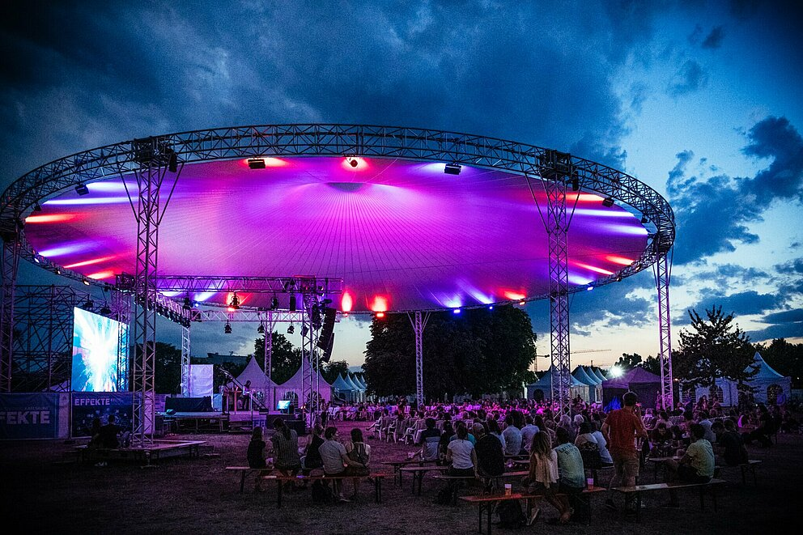

Карлсруе : наука

За роки Карлсруе перетворився на важливе науково-дослідне місце. Численні відомі університети та дослідницькі установи створюють середовище, що характеризується інноваціями. На порядку денному такі майбутні теми, як стійкість і цифровізація. У Карлсруе особливо цінують тісну мережу та інтенсивний обмін між наукою, бізнесом, культурою та міським суспільством.
Тиждень науки KIT є міжнародним дослідницьким конгресом і водночас публічним заходом для всіх ентузіастів науки та культури в Карлсруе та його околицях. Різноманітні формати дозволяють заглибитися в наукові теми та заохотити до дискусії. KIT доводить сучасну науку та її відкриття до громадян і, навпаки, також включає імпульси суспільства в роботу в KIT.
Кожні два роки науково-популярний фестиваль EFFEKTE перетворює місто на величезну практичну лабораторію пригод! Університети та науково-дослідні установи Карлсруе дивовижним чином пропонують розуміння їхнього захоплюючого та ефективного наукового середовища. Напередодні фестивалю проходить серія EFFEKTE, у рамках якої дослідники раз на місяць звітують про актуальні теми та відкриття.